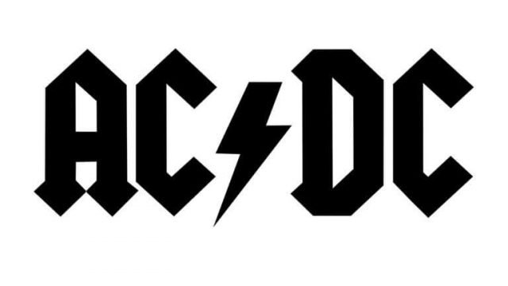

Permite anclar una dirección URL
Ejemplo:
Representa una abreviación o acronimo el atributo opcional title puede ampliar o describir la abrebiatura, si esta presente el atributo title tiene que contener la descripción completa y nada más
Ejemplo:
Esto es un telefono NOKIA
Define la información de contacto del autor/propietario de un documento u artículo.
Ejemplo:
Escrito por
PatricioUn artículo debe tener sintido por sí mismo y debe ser posible distriburilo independientemente del resto del sitio.
Fuentes potenciales para el elemento article:
- Publicación en el foro
- Entrada en el blog
- Noticia
NOTA: <article> no se muestra como algo especial en un navegaror.Sin embargo, puede usar CSS para darle diseño
Define algún contenido además del contenido en el que se coloca. El contenido aparte de be estar indirectamente relacionado con el continido circulante
Sugerencia: aside se coloca a menudo como una barra lateral en un documento
Nota: Este elemento no se muestra como algo especial en el navegador. Sin embargo, puede usar CSS para diseñar el aside.
Agrega controles de audio, como reproducción, pausa y volumen. El <source> permite especificar archivos de audio alternativos entro los que puede elegirl el navegador
Ejemplo:
Define un botón enel que es puede hacer clic.
Dentro de un <button> puedes poner texto (y etiquteas como <i>,<b>,<strong>,<img>,etc ). !Eso no es posible con un botón creado con el <input>
Sugerencia:Especifique siembre el type de un <button>, para indicar a los navegadores qué tipo de botón es.
Consejo: Puede diseñar botones facilmente con CSS
Ejemplo:
Es un contenedor para diferentes tipo de elementos de entrada, como: campos de texto, casillas de verificación, botones de opción, botonees de envío, etc.
- <input type="text">
- <input type="radio">
- <input type="checkbox">
- <input type="submit">
- <input type="button">
Mustra un campo de entrada de texto de una solo line
Muestra un botón de radio(para selecionar una de muchas opciones)
Muestra una casilla de verificación(para selecionar cero o más opciónes)
Muestra un botón de envio(para enviar el formulario)
Muestra un botón en e que sepuede hacer clic
Define un pie de página para un documento o sección
Normalmente contien:
Representa un contenedor de contenido introductorio o un conjunto de enlaces de navegación. Normalmente contiene:
- Uno a más elementos de encabezado
- Logotipo o icono
- información de autoría
NOTAPuede tener varios <header> en un documento HTML. Sin embargo, no sepuede colocardentro de un <footer>, <address> u otro <header>
Encabezado de la página principal aquí
Publicado el 17/08/2022
Generalmente se usa para agrupar un conjunto d euno o más elementos <h1> - <h6>, para agrupar, porejemplo, un titulo de sección y un subtitulo adjunto.
Ejemplo:
titulo primario
Titulo secundario
Se utilizan para definir encabezados HTML.
Ejemplo:
Hola mundo!
Hola Mundo!
Se utiliza para incrustar una imagen en una página HTML.
Técnicamente, las imágenes no se insertan en una página web; las imágenes están vinculadas a páginasweb. La etiqueta <img< crea un espacio de espera para la imagen de referencia.
Tiene atributos obligatorios:
- src: especifica la ruta a la imagen
- alt: especifica un texto alternativo para la imagen, si la imagen por algún motivo no se puedemostrar

Se utiliza para definir un mapa de imagen, es una imagen con áreas en las que se puede hacer clic. El atributo de nombre requerido del <map> esta asocioado con el atributo usemap de <img> y crea una relación entre la imagen y el mapa.
Ejemplo:

Define un conjunto de enlaces de navegación.
Tenga en cuenta que NO todos los enlaces de un documento deben estar dentro de un <nav>. Este elemento está destinado solo para el bloque principal de enlaces de navegación.
Ejemplo:
Define un párrafo.
Los navegadores agregan automáticamente una línea en blanco antes y después de cada <p>
Ejemplo:
Este es un parrafo
Este es otro parrafo
Se utiliza para incrustar un script del lado del cliente JavaScript Contiene declaraciones de secuencias de comandos o apunta a un archivo de secuencia de comandosexternos a través del atributo src.
Los usos mas comunes de JavaScript son manipulación de imágenes, la validación de formularios y los cambios dinámicos de contenido.
Nota:cuando un navegador lee una hoja de estilo, formateará el documento HTML de acuerdo con lainformación de la hoja de estilo. Si se han definido algunas propiedades para el mismo selector(elemento) en diferentes hojas de estilo, se utilizará el valor de la última hoja de estilo leída (consulte elejemplo a continuación).
Ejemplo:
<script src="javascript.js"></script>
Se utiliza para definir la información de estilo CSS de un documento
Dentro de <style>, especifica cómo deben mostrarse los elementos HTML en un navegador.
Ejemplo:
<style type="text/css">
p { color: red; }
</style>
<p> Texto en rojo </p>
Define una sección en un documento
Ejemplo: